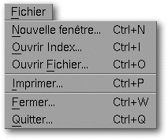
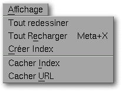
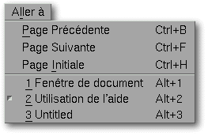
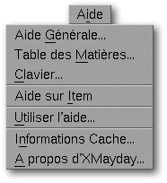

<!-- Documentation XMayday (c)1996-2000 AXENE contact axene@axene.org>
<HTML>
<HEAD>
<TITLE>Barre de menus</TITLE>
</HEAD>
<BODY BGCOLOR=#FFFFFF BACKGROUND="Images/back.gif" TEXT=#000000>
<P ALIGN=right>

<P>
<BR>
<BR>
La barre de menus de chaque fen&ecirc;tre XMayday permet d'acc&eacute;der
aux menus d&eacute;roulants suivants&nbsp;:
<BR>
<BR>
<HR>
<BR>
<P>
<A NAME="file"></A>
<P ALIGN=right>

<P>
<BR>
Le menu d&eacute;roulant <I>&quot;Fichier&quot;</I> permet d'acc&eacute;der
aux fonctions d'entr&eacute;es/sorties usuelles.
<BR>
<BR>
<CENTER>

<BR>
<I><SMALL>
Photo d'&eacute;cran&nbsp;: Menu d&eacute;roulant Fichier.
</I></SMALL>
</CENTER><P>
<BR>
<P>
<H3>Le menu Fichier comporte les entr&eacute;es suivantes&nbsp;:</H3>
<UL>
  <LI><A NAME="new_menu_entry">l'entr&eacute;e <I>&quot;Nouvelle fen&ecirc;tre...&quot;</I> permet d'<B>ouvrir une
     nouvelle fen&ecirc;tre XMayday</B>. La nouvelle fen&ecirc;tre
     est ouverte avec la m&ecirc;me page html d'index et de navigation
     que la fen&ecirc;tre XMayday d'origine.
     </A><P>
  <LI><A NAME="open_index_menu_entry">l'entr&eacute;e <I>&quot;Ouvrir Index...&quot;</I> permet de <B>choisir
     la page html d'index</B>. Elle appelle le s&eacute;lecteur de fichier
     '<A HREF="Box_File_Selectors.html#fs_open_index">Ouverture
     d'un index</A>' pour choisir le fichier contenant
     la page d'index. Si la <A HREF="Main_Interface.html#index_section">section index</A> de
     l'<A HREF="Main_Interface.html">interface
     g&eacute;n&eacute;rale</A> est ferm&eacute;e, choisir une page
     d'index l'ouvrira automatiquement.
     </A><P>
  <LI><A NAME="open_file_menu_entry">l'entr&eacute;e <I>&quot;Ouvrir Fichier...&quot;</I> permet de <B>choisir
     la page html de navigation</B>. Elle appelle le s&eacute;lecteur de fichier
     '<A HREF="Box_File_Selectors.html#fs_open_file">Ouverture d'un fichier</A>'
     pour choisir le fichier contenant la page &agrave; afficher.
     </A><P>
  <LI><A NAME="print_menu_entry">l'entr&eacute;e <I>&quot;Imprimer...&quot;</I> permet d'<B>imprimer
     la page de navigation courante</B>. Elle appelle la bo&icirc;te de dialogue
     '<A HREF="Box_Print.html">Impression</A>'. 
     </A><P>
  <LI><A NAME="close_menu_entry">l'entr&eacute;e <I>&quot;Fermer...&quot;</I>
     permet de <B>fermer la fen&ecirc;tre XMayday courante</B>.
     </A><P>
  <LI><A NAME="quit_menu_entry">l'entr&eacute;e <I>&quot;Quitter...&quot;</I>
     permet de <B>quitter XMayday</B>.
     Toutes les fen&ecirc;tres XMayday seront ferm&eacute;es.
     Une bo&icirc;te de dialogue appara&icirc;tra pour demander confirmation.
     </A><P>
</UL>
<BR>
<HR>
<A NAME="view"></A>
<P ALIGN=right>

<P>
<BR>
Le menu d&eacute;roulant <I>&quot;Affichage&quot;</I> permet de
changer la configuration de l'affichage dans la fen&ecirc;tre
XMayday courante.
<BR>
<BR>
<CENTER>

<BR>
<I><SMALL>
Photo d'&eacute;cran&nbsp;: Menu d&eacute;roulant Affichage.
</I></SMALL>
</CENTER><P>
<BR>
<P>
<H3>Le menu Affichage comporte les entr&eacute;es suivantes&nbsp;:</H3>
<UL>
  <LI><A NAME="refresh_menu_entry">l'entr&eacute;e <I>&quot;Tout redessiner&quot;</I> permet de <B>redessiner
     les pages d'index et de navigation</B>. Il est possible que
     l'affichage dans les pages d'index et de navigation soit alt&eacute;r&eacute;,
     cette entr&eacute;e de menu permet de rafra&icirc;chir l'affichage.
     </A><P>
  <LI><A NAME="reload_menu_entry">l'entr&eacute;e <I>&quot;Tout recharger&quot;</I> permet
     de <B>r&eacute;actualiser les pages d'index et de navigation</B>. Les fichiers sources
     des pages html affich&eacute;es seront relus.
     </A><P>
  <LI><A NAME="transfert_menu_entry">l'entr&eacute;e <I>&quot;Cr&eacute;er index&quot;</I> permet
     de <B>cr&eacute;er
     la page d'index &agrave; partir de la page de navigation</B>.
     La page de navigation appara&icirc;tra dans la section d&eacute;volue
     &agrave; la page d'index.
     </A><P>
  <LI><A NAME="view_index_menu_entry">l'entr&eacute;e <I>&quot;Afficher/Cacher index&quot;</I> permet
     de <B>faire appara&icirc;tre ou non l'index</B> si celui-ci existe.
     </A><P>
  <LI><A NAME="view_url_menu_entry">l'entr&eacute;e <I>&quot;Afficher/Cacher URL&quot;</I> permet
     d'<B>afficher/cacher la barre d'information</B> de la fen&ecirc;tre XMayday courante.
     </A><P>
</UL>
<BR>
<HR>
<A NAME="goto"></A>
<P ALIGN=right>

<P>
<BR>
Le menu d&eacute;roulant <I>&quot;Aller &agrave;&quot;</I> permet
d'acc&eacute;der de mani&egrave;re relative ou absolue &agrave;
une des pages html sauv&eacute;es dans l'historique. Chaque fen&ecirc;tre
XMayday garde un historique des pages de navigation successivement
lues.
<BR>
<BR>
<CENTER>

<BR>
<I><SMALL>
Photo d'&eacute;cran&nbsp;: Menu d&eacute;roulant Aller &agrave;.
</I></SMALL>
</CENTER><P>
<BR>
<P>
<H3>Le menu 'Aller &agrave;' comporte les entr&eacute;es suivantes&nbsp;:</H3>
<UL>
  <LI><A NAME="prev_menu_entry">l'entr&eacute;e <I>&quot;Page pr&eacute;c&eacute;dente&quot;</I> permet de<B>
     visionner la page html pr&eacute;c&eacute;dente de l'historique</B>.
     La page pr&eacute;c&eacute;dente est la page lue et affich&eacute;e
     juste avant la page de navigation courante.
     </A><P>
  <LI><A NAME="next_menu_entry">l'entr&eacute;e <I>&quot;Page suivante&quot;</I> permet de <B>visionner la
     page html suivante de l'historique</B>. La page suivante est la
     page lue et affich&eacute;e juste apr&egrave;s la page de navigation
     courante.
     </A><P>
  <LI><A NAME="home_menu_entry">l'entr&eacute;e <I>&quot;Page initiale&quot;</I> permet de <B>visionner la
     premi&egrave;re page html gard&eacute;e dans l'historique</B>.
     </A><P>
  <LI><A NAME="history_menu_entry">les entr&eacute;es suivantes montrent le titre des 20 derni&egrave;res
     pages gard&eacute;es dans l'<B>historique</B>. La page html visualis&eacute;e
     dans la section de navigation est rep&eacute;r&eacute;e
     dans le menu d&eacute;roulant par un marqueur devant
     le titre de la page. S&eacute;lectionner une des entr&eacute;es
     de l'historique permet de visualiser directement la page html
     correspondante.
     </A><P>
</UL>
<BR>
<HR>
<A NAME="help"></A>
<P ALIGN=right>

<P>
<BR>
Le menu d&eacute;roulant <I>&quot;Aide&quot;</I> permet d'acc&eacute;der
&agrave; l'aide d'XMayday.
<BR>
<BR>
<CENTER>

<BR>
<I><SMALL>
Photo d'&eacute;cran&nbsp;: Menu d&eacute;roulant Aide.
</I></SMALL>
</CENTER><P>
<BR>
<P>
<H3>Le menu Aide comporte les entr&eacute;es suivantes&nbsp;:</H3>
<UL>
  <LI><A NAME="overview_menu_entry">l'entr&eacute;e <I>&quot;Aide
     g&eacute;n&eacute;rale...&quot;</I> permet d'obtenir des 
     <A HREF="Overview.html">informations g&eacute;n&eacute;rales</A> 
     sur la mani&egrave;re d'utiliser Xclamation.
     </A><P>
  <LI><A NAME="table_of_contents_menu_entry">l'entr&eacute;e <I>&quot;Table
     des mati&egrave;res...&quot;</I> permet d'acc&eacute;der &agrave;
     la <A HREF="index.html">table des mati&egrave;res</A> de l'aide.
     </A><P>
  <LI><A NAME="keyboard_menu_entry">l'entr&eacute;e <I>&quot;Clavier...&quot;</I>
     permet d'obtenir de l'aide sur l'usage g&eacute;n&eacute;ral
     du clavier, notamment les <A HREF="Keyboard.html#shortcuts">raccourcis claviers</A>.
     </A><P>
  <LI><A NAME="help_on_item_menu_entry">l'entr&eacute;e <I>&quot;Aide
     sur item&quot;</I> permet d'obtenir de l'aide en cliquant sur
     une certaine partie de l'interface.
     </A><P>
  <LI><A NAME="using_help_menu_entry">l'entr&eacute;e <I>&quot;Utiliser
     l'aide...&quot;</I> permet d'obtenir des informations sur les
     diff&eacute;rentes mani&egrave;res d'avoir de l'<A HREF="Help_Usage.html">aide</A>.
     </A><P>
  <LI><A NAME="cache_menu_entry">
     l'entr&eacute;e <I>&quot;Informations Cache...&quot;</I> 
     permet de <B>modifier les param&egrave;tres du
     cache images</B>. Elle appelle la bo&icirc;te de dialogue
     '<A HREF="Box_Image_Cache.html">Informations Cache Images</A>'.
     </A><P>
  <LI><A NAME="about_xmayday_menu_entry">l'entr&eacute;e <I>&quot;A
     propos d'XMayday...&quot;</I> permet d'ouvrir une bo&icirc;te
     indiquant des informations sur la version d'XMayday utilis&eacute;e
     et les adresses pour <A HREF="About.html">contacter Axene</A>.
     </A><P>
</UL>
<BR>
<HR>
<P ALIGN=right>
<P>
</BODY>
</HTML>
